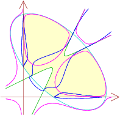

Dense FewnomialsKorben Rusek, Jeanette Shakalli, and Frank Sottile. |
 |
| We derive new bounds of fewnomial type for the number of real solutions to systems of polynomials that have structure intermediate between fewnomials and generic (dense) polynomials. This uses a modified version of Gale duality for polynomial systems. We also use stratified Morse theory to bound the total Betti number of a hypersurface defined by such a dense fewnomial. These bounds contain and generalize previous bounds for ordinary fewnomials obtained by Bates, Bertrand, Bihan, and Sottile. |